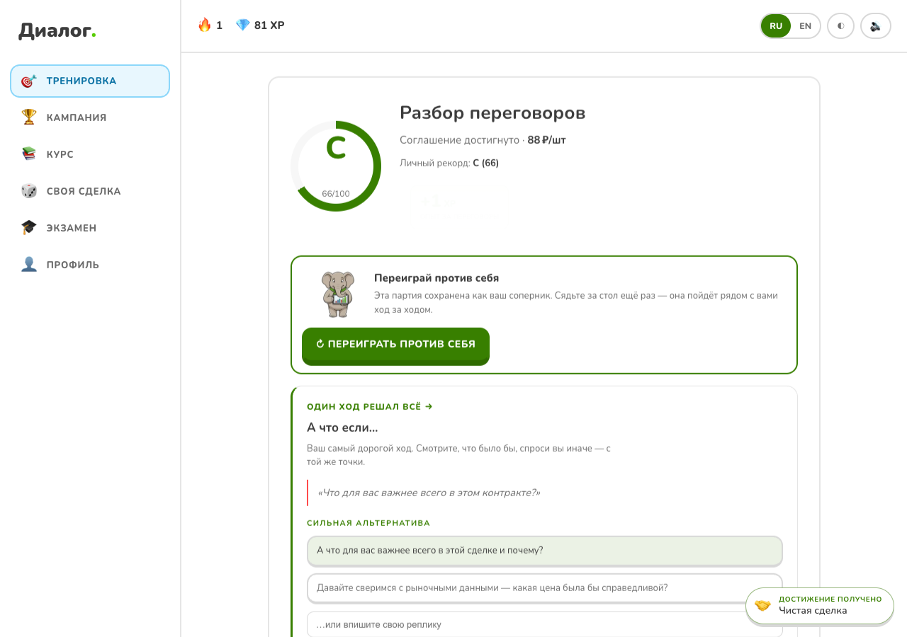

Диалог
Тренажёр деловых переговоров с ИИ-аватаром
ЛЦТ · Задача №9 · ОЭЗ «Алабуга»
Решение команды из двух участников
ЛЦТ · Задача №9 · ОЭЗ «Алабуга»
Решение команды из двух участников
Практика переговоров в заданном контексте: реплика меняет доверие, напряжение и условия сделки.
После партии игрок видит разбор и может переиграть конкретное решение.
Состояние и итоговую оценку считает движок. ИИ формулирует ответ и помогает разбирать доводы.
Экзамен использует воспроизводимые правила; курс и офлайн-режим опираются на ту же механику.
О команде: 2 участника. Капитан, город и регион уточняются; состав и контакты на следующем слайде.
2Участник команды
@AlexBV2906
Участник команды
@elshod_vafaev
Место работы или учёбы и телефон: не предоставлены. Контакт для связи: Telegram.
3Два участника представляют проект «Диалог». История знакомства и прежние совместные проекты уточняются.
Продуктовая гипотеза: тренировочные переговоры дают сотруднику возможность проверить реплику и увидеть последствия до реальной сделки.
Колебания оценки ИИ: изолировали зачётный режим. Отказ распознавания: локальный Parakeet под systemd и явный переход к текстовому вводу.
React / TypeScript, WebSocket и FastAPI. Сценарий хранит роли, скрытые интересы и границы сделки.
Голос превращается в текстовый ход. Камера и лицо не добавляют баллов.
Учебная практика для менеджеров, закупок и продаж. Организатор задаёт сферу, тему, роль и цель оппонента.
Следующий шаг: пилот с наставником и согласованной рубрикой. Организационная лицензия — гипотеза для проверки.
Игрок узнаёт интересы оппонента и предлагает условия.
После партии видит исход, оценку и альтернативу конкретному ходу.
В продукте 9 встроенных сценариев, 101 упражнение и 2 кампании.

| Реплика игрока | Текст или локальное распознавание Parakeet |
| Переговорный ход | Движок состояния; семантический судья в тренировке |
| Ответ оппонента | Языковая модель, текст и потоковая озвучка |
| Оценка | Экономика 40% · отношения 25% · техника 35% |
| Работа без сети | Офлайн-движок с общими проверочными примерами |
Активные серверные партии хранятся в памяти процесса. После рестарта gateway они не восстанавливаются.
7Проверенные регрессии; отрицательные тесты ловят намеренные поломки. 159 backend-тестов пропущены по условиям набора.
Один технический прогон на установленном backend: записанный микрофон, настоящий Parakeet, три хода и разбор. Это не длительность учебного занятия.
Остановили ASR: интерфейс сообщил об ошибке, ход остался на нуле. Та же партия завершилась текстом, без автоматического облачного ASR.
Результат экзамена формирует сервер. Подпись и уникальный идентификатор позволяют проверить запись в реестре.
Прототип подтверждает одну анонимную экзаменационную попытку. Постоянная выдача на стенде выключена.
После необходимых согласований планируем выдавать дипломы. Для этого согласуем идентификацию, хранение результатов и полномочия выдающей организации.
Согласовать сценарии и рубрику с наставником; сравнить выполнение заданий до и после тренировки. Эффективность обучения пока не измерена.
Добавить кабинет с правами доступа и хранением сценариев; определить правила аттестации и обработки результатов.
Текущее лицо использует клипы и рот по амплитуде звука. Платный видеопровайдер потребует адаптера, проверки синхронизации и отмены речи.
Демо: https://dialog.2-26-49-28.nip.io
10